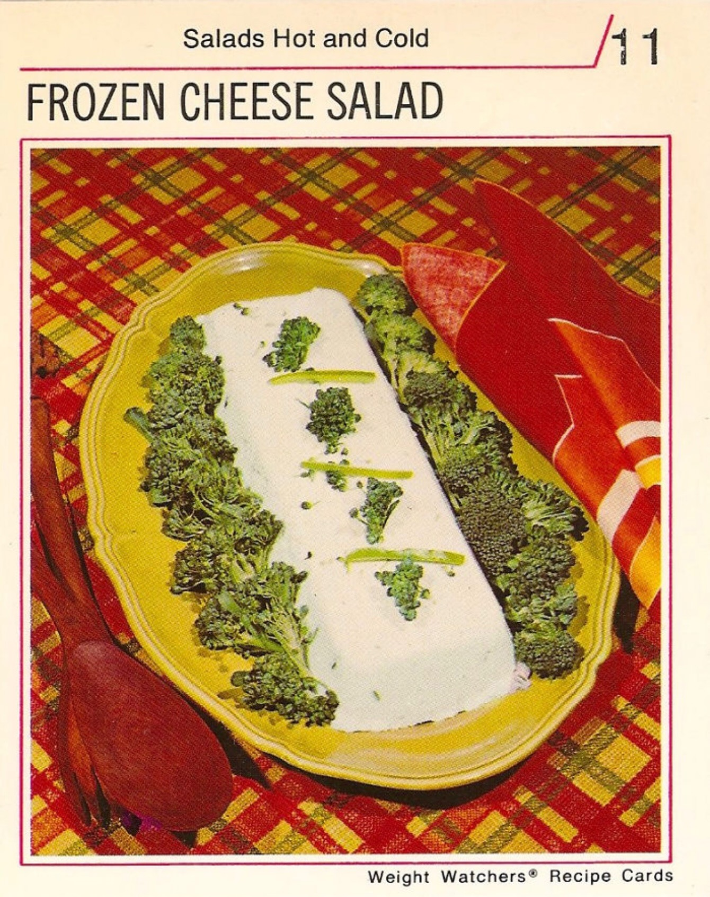

Frozen Cheese Salad!

Wondering why you'd ever make this? Me too!
buckle up kids we'll figure it out together; here's the ingredients.
- 2 2/3 cups cottage cheese
- 8 ounces blue cheese
- 1/2 cup buttermilk
- 2 tablespoons chives
- 2 teaspoons grated lemon peel
- 1 teaspoon barbecue sauce (REALLY?)(yup)
- 1 teaspoon Worcestershire (Wooshtasheer) sauce
- 2 cups raw broccoli florets
- Green pepper strips for garnish
Alright now that we've got our ingredients together, lets freeze some cheese!
- Let cheese stand at room remp for 30 min
- Place in blender container with buttermilk, chives, lemon peel, and sauces
- Blend it up until mixture is real smooth
- Transfer to freezer tray
- Freeze at least 3 hours
- Remove from freezer 15 min before serving, gotta let this slab thaw
- Unmold from freezer tray onto serving platter
- Surround with broccoli florets, gotta make it appear healthy
- Garnish with green pepper strips to give em the ol' razzle dazzle
- Call your mom and ask if she's proud of you, I know I am
- I hope you invited some frineds over cuz this bad mammajamma is big enough to serve 8!
Return to main page